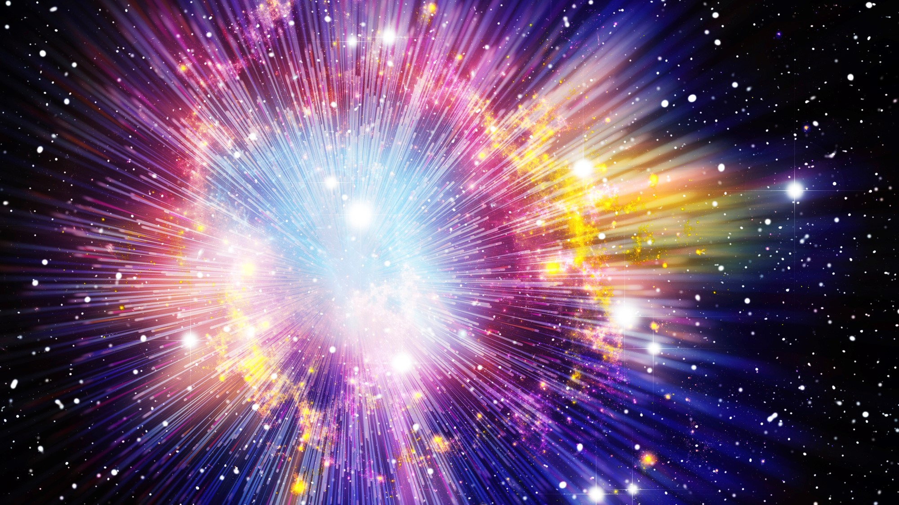

Introduction to the Big Bang
The Big Bang is the scientific theory that explains the origins of the universe. It is based on the idea that the universe began as a hot and dense point, which rapidly expanded and cooled over time. The Big Bang is an important theory because it helps us understand the history and evolution of the universe.
